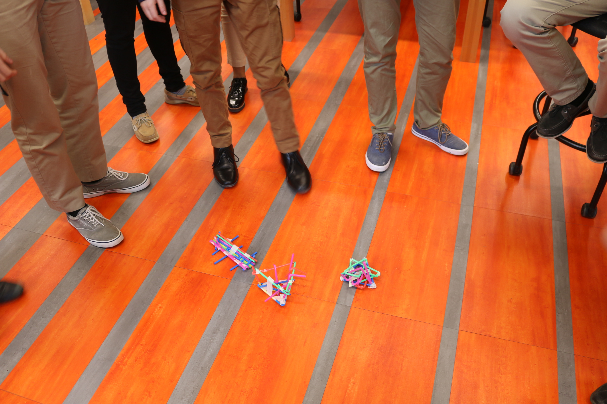

This first rotation of class required us to complete a series of two challenges that were provided to us by Mr. Gerber. Our first chalenge was to create the tallest possible tower out of newspaper.
Overall I would say my group was successful during this first challenge. We had a few theories about what we should do in regards to our base. We eventually decided on a shallow cone like structure.
We decided to use this method in order to achevie the most surface area contacting the ground, while remaining stable and aerodynamic from multiple directions.
My bigest contribution was the use of rolling the paper into longer, stiffer, more durable pieces in order to increase the height. This can be seen in the followng image:
Our second challenge consisted of us students attempting to catch a golf ball with a set amount of straws and tape.
Although my group was unsuccesfull, I still believe that it was a good way to learn how eachother thinks and processes problems.
We initially had a few design problems so at the end we panicked an created a flat 'coffin' for the golf ball to land on top of. Anticipating a failure, we cut up a few of the remaining straws to make confetti when the golf ball hit our contraption.
